Glavni projekti
-
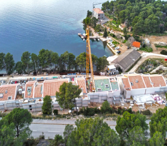
Hotel Grandovac
-
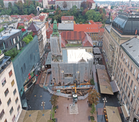
SPC Zagreb
-
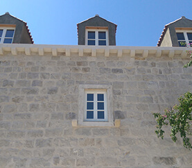
Vila Cavtat
-
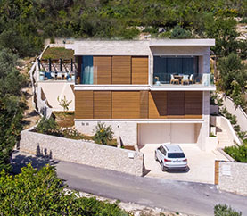
Vila Zaton
-
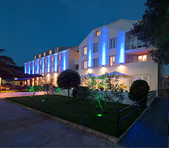
Hotel Šipan - Šipan
-
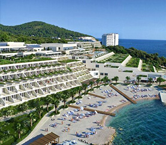
Hotel President
-
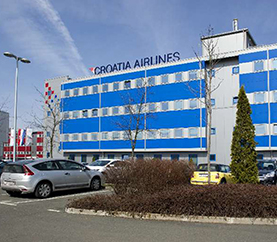
PC Mani Zagreb
-
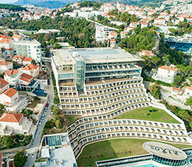
Hotel Rixos Libertas
-
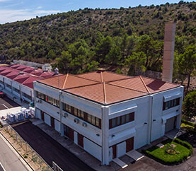
Praonica Zvekovica
-
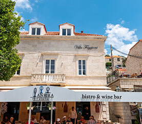
Villa Faggioni
-
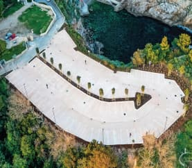
Park Gradac


Reference
Rekonstrukcija i proširenje Lapadske obale – Obala Nojka Marinovića
Investitor: Grad Dubrovnik
Opis: U rujnu 2021. započeli smo s bušenjem AB pilota. Do lipnja 2022. izveli smo ukupno 131 AB pilot, 11 AB pilota promjera 1200mm i 120 AB pilota promjera 1000mm. Na izvedene AB pilote ugrađivane su AB zavjese proizvedene na izdvojenom gradilišnom pogonu. Ugradnjom AB zavjesa, konstrukcijski je završen obalni zid projekta te su stečeni preduvjeti za polaganje instalacija te formiranje trupa buduće prometnice.
Proizvodno-poslovna građevina FEAL Hrvatska
Investitor: Feal Hrvatska
Opis: Predmet projekta je izgradnja glavne zgrade – trobrodne poslovno-proizvodne hale s pomoćnim objektima i pratećim sadržajima, kao i uređenje okoliša koje obuhvaća hortikulturu, asfaltiranje i uređenje prometnica. U glavnoj zgradi će se nalaziti proizvodni pogon, skladište gotovih proizvoda i uprava sa svim pratećim sadržajima kako za prozvodni, tako i za upravni dio.
Atlant Batala centar
Investitor: Atlantska plovidba d.d.
Opis: Planirana je izgradnja poslovno stambene dvojne građevine. Zgrada se sastoji od stambeno poslovnog dijela bloka A i bloka B. Oba bloka imaju objedinjenu podzemnu garažu. Planirana zgrada pored stambenog prostora u nadzemnim etažama sadržavat će uslužne djelatnosti i apartmane. Ima ukupno 3 podzemne etaže, prizemlje i 6 nadzemnih etaža. Tvrtka Texo Molior izvodi konstruktivne radove, armirano betonsku konstrukciju sa pripadajućim temeljnim instalacijama. U tijeku je betoniranje stropne ploče prizemlja objekta A i zidova objekta B. Tijekom izvođenja radova na gradilistu su aktivne pumpe koje pumpaju vodu uz upojnih bunara i koji se planiraju zatvoriti po koncu izvođenja radova.
Omiš - uređenje luke otvorene za javni promet
Investitor: Lučka Uprava Splitsko-dalmatinske županije
Opis: Građevina se u morskom dijelu sastoji od dograđenih dijelova, kao što su nova obalna linija A, obalna linija B, produženje postojećeg gata (obalna linija C) i obalne linije D.
Hotel Grandovac
Investitor: Privatni investitor
Opis: Radovi na izgradnji Hotela Grandovac na otoku Visu smještenom na istočnoj strani Viške Luke. Hotel je katnosti podrum, prizemlje i tri kata, sa 35 hotelskih soba i četiri luksuzna dvosobna penthousea na zadnjoj etaži. U sklopu hotela nalazi se restoran, unutarnji i vanjski bazen, masažni bazen, sauna, wellnes, spa i teretana. Uz hotel se izvode i radovi na rekonstrukciji objekta Češka vila katnosti suteren, prizemlje i dva kata, sa osam luksuznih hotelskih soba, u sklopu kojega se nalazi i restoran te lobby bar.
HZJZ
Investitor: Hrvatski zavod za javno zdravstvo
Opis: Projekt izrade projektne dokumentacije i izvođenja radova cjelovite obnove zgrade HZJZ-a na adresi Rockefellerova ul. br. 2 u Zagrebu, investitora Hrvatski zavod za javno zdravstvo. Zgrada Hrvatskog zavoda za javno zdravstvo sagrađena je između 1924. i 1926. godine s jednom dogradnjom 1960. godine. Nalazi se u zoni B područja Povijesne urbane cjeline grad Zagreb te je obnovu potrebno uskladiti s konzervatorskim uvjetima. Predmetna zgrada je razvedenog tlocrtnog oblika, katnosti: suteren, prizemlje, dva kata i potkrovlje.
CGO centar za gospodarenje otpadom – Biljane Donje
Investitor: EKO d.o.o. Zadar
Opis: Županijski centar za prikupljanje i gospodarenjeotpadom Biljane Donje ( CGO Biljane Donje), smješten je sjeverno od grada Zadra i zauzima površinu od 46hektara, te se u njemu planira prikupljanje otpada izcijele Zadarske županije te dijela Ličko-senjske županije.Predviđeni životni vijek centra je minimalno 30 godina.
SPC Zagreb
Investitor: Srpska pravoslavna crkva
Opis: Konstruktivna i cjelovita obnova od potresa crkve Sv.Preobraženja Gospodnjeg na Preradovićevom trgu u Zagrebu. Obnova obuhvaća ojačanja zidova i svodova crkve FRCM sustavom i ugradnjom sidara u zidove. Ojačanje novog bakrenog krovišta crkve ugradnjom čelične konstrukcije. Izvedba nove fasade. Restauratorske radove. Elektroinstalaterske radove, te strojarske radove hlađenja i ventilacije
Sanacija dijela obale i izgradnja gata u luci Cavtat
Investitor: Lučka Uprava Dubrovačko-neretvanske županije
Opis: Predmet ovog projekta su pomorsko-građevinskiradovi na rekonstrukciji dijela obale u luci Cavtatizgradnji gata (mula), proširenje postojeće rive, teobnova dijela oštećene rive.Duljina obale- zahvat radova je cca 250m.Izvedeni radovi: rušenje postojeće rive, podmorskiiskopi, temeljenje stupnjacima i zaštita, izrada abblokova i izgradnja rive, izrada podmorskih inadmorskih ab zidova, izrada zatega, polaganje elektroinstalacija, vode i odvodnje i hidrantske mreže,kamenarski radovi kao i dobava i ugradnja opreme rivei elektro ormara I priključaka.U izvođenju radova korištena mehanizacija: trajekt,jack up, auto dizalice, bager duge grane i dr.Ugovorni rok za izvođenje radova je 3 godine.
Hotel Tirena
Investitor: Valamar Riviera d.d.
Opis: Hotel Tirena , postojeća građevina koja ima razgranattlocrtni oblik. Po terenu se stepenasto spušta tako dadirektan kontakt s terenom imaju tri etaže: prizemlje kaoulazna etaža, suteren -1 kao etaža restorana i suteren -2na dijelu gdje se teren još više spušta. Glavni je ulaz najužnoj strani objekta a gospodarski je ulaz na istočnoj.Građevina je u potpunosti uklopljena u okoliš tako da jevegetacija uvijek blizu staklenim stijenama. Hodnici kojipovezuju sobe su velikim dijelom jednostrani i samimtime prirodno osvijetljeni. Krovišta hotela sujednostrešna i dvostrešna i pokrivena su crijepom. Pokategorizaciji Hotel Tirena trenutno ima tri zvjezdice.
Apart hotel Cavtat
Investitor: Domovi dalmatinske rivijere d.o.o. Zagreb
Opis: Izgradnja 22 turistička apartmana visoke kategorije na atraktivnoj lokaciji u Cavtatu. Apartmani su podijeljeni u 4 objekta s podzemnom garažom, recepcijom, bazenom,restoranom, te prostorima za opuštanje (wellness,fitness, saune). Konstrukcija je armirano-betonska, a u fasadu i opremu apartmana i popratnih sadržaja ugraditi će se najmoderniji materijali i oprema, kao i sustav pametne kuće
Luka Trpanj
Opis: Predmet ovog projekta je rekonstrukcija dijela luke otvorene za javni promet u Trpnju, sjeveroistočno od trajektne rampe, u duljini cca 150 m, te područja mora u toj širini. Predmet zahvata je slijedeći sadržaj: Uređenje prometnice za okretište vozila i trake za čekanje za ukrcaj na trajekt, obala za privez brodica u tranzitu sa stupnom dizalicom i istezalištem na rubnom sjeveroistočnom dijelu, vodovod i hidrantska mreža, oborinska kanalizacija, elektroinstalacije i TK instalacije područja zahvata, krajobrazno uređenje zelenih površina
Rekonstrukcije luke za javni promet u naselju Donje Čelo, otok Koločep
Opis: Radovi su obuhvaćali: izradu privezne obale s vertikalnim obalnim zidom dužine 56,0 m, za privez trajekta tipa "Vis", s lučkim iskopom do kote -4,80 m, u cilju formiranja privezne obale u duljini 56,0 m izvršena je rekonstrukcija postojećeg mula produljenjem za cca 31,20 m te proširenjem za cca 4,10 m, na ukupno 11,00 m, izradu trajektne rampe širine 20 m s operativnim plato-om dimenzija 37,0x18,70 m.
Vijadukt Brijesta
Opis: Vijadukt Brijesta sastavni je dio projekta Most kopno - Pelješac s pristupnim cestama na D8 i D414. Ukupna dužina vijadukta je 134m i sastoji se od sedam raspona duljine 17m-20m. Temeljenje stupova vijadukta Brijesta je projektirano na bunarima. Stupovi su oblika I presjeka vanjskih dimenzija 1,5x4,0 m, pri vrhu s proširenjem zbog oslanjanja ležajeva. Visine stupova su od 6,15 m do 18,72 m. Rasponski sklop građevine je na licu mjesta izvedena monolitna armiranobetonska ploča preko sedam raspona upeta u 4 srednja stupa i oslonjena preko elastomernih ležajeva na krajnje stupove i upornjake. Ploča je konstantne debljine d=110 cm, a na rubovima završava bočnim konzolama duljine 2,55 m, promjenjive debljine 25-50 cm. Prometnica se sastoji se od dvije prometne trake 2x4,05 = 8,1 m i dvije pješačke staze s vijencima širine 2,0m, tj. ukupne širine 12,10 m na većem dijelu vijadukta dok se na kraju prema upornjaku U7 cesta širi tako da je ukupna širina konstrukcije 15,65 m. Radovi su započeli u studenom 2021., te uspješno završeni prije otvaranja Pelješkog mosta u srpnju 2022.
Rekonstrukcija i sanacija operativne obale u luci Komolac
Investitor: Županijska lučka uprava Dubrovnik, Dubrovnik
Opis: Rekonstrukcija i sanacija operativne obale u luci Komolac. Izvođenje podmorskog iskopa. Poravnanje i nabijanje terena uz pomoć ronilaca. Ugradnja predgotovljenih "L" betonskih elementa prosječne težine 12 t. Završni radovi na ugradnji betonskih opločnika i kamene obloge u dužini cijele rive od 52m'.
Hotel Excelsior - sanacija rive
Investitor: ALH d.o.o.
Opis: Rekonstrukcija rive Hotel Excelsior. Izvođenje podmorskih radova.
Hotel Šipan - Šipan
Investitor: Casalinus d.o.o. Zagreb
Opis: Rekonstrukcija smještajnih i zajedničkih prostora, vanjska rasvjeta fasade i unutarnje uređenje interijera hotela.
Vila Luna - Cavtat
Investitor: Privatni investitor
Opis: Rekonstrukcija objekta i izgradnja pratećih objekata u skladu sa Zakonom o zaštiti spomenika kulture. Izgradnja ville u staroj jezgri Cavtata veličine 500 m2 trajala je nešto manje od godinu dana, od idejnog projekta do završetka. Villa Luna se sastoji od pet dvokrevetnih soba sa pripadajućim kupaonicama, velikom kuhinjom i blagavaonicom koje su mještene u prizemlju koje je povezano sa unutarnjim bazenom i vinskim podrumom te velikim privatnim vrtom. Dnevni boravak na katu ima pristup terasi sa jacuzziem.
Hotel President
Investitor: Kamgrad d.o.o.
Opis: Rekonstrukcija Hotela President - izgradnja novih krila hotela.
Villa Bobić
Investitor: Ivo Bobić
Opis: Rekosntruckija objekta i izgradnja pratećih objekata u skladu sa Zakonom o zaštiti spomenika kulture. Objekt je u tijeku izvođenja, radovi na okolnom uređenju sa velikim vrtom i bazenom, unutrašnji radovi na izvedbi međukatnih konstrukcija, konstrukcije okna za lift i instalacija.
Villa Zaton
Investitor: Fromapharm engineering group d.o.o.
Opis: Početak izgradnje ville
Gospodarski objekt
Investitor: OPG Damir Bogdanović
Opis: Početak izgradnje obiteljskog gospodarstva koji se sastoji od gospodarskog objekta ,stambene zgrade i bazena sa uređenjem okoliša.
Pojačano održavanje i proširivanje mreže javne rasvjete Župa Dubrovačka
Investitor: Općina Župa Dubrovačka
Opis: Izvođenje radova na proširenju mreže javne rasvjete na području općine Župa Dubrovačke. Izvedeni zemljani radovi, elektroinstalaterski radovi, armirano betonski radovi kao i dobava i montaža rasvjetnih stupova i tijela.
Izgradnja komunalne infrastrukture budućeg groblja Dubac, Župa Dubrovačka
Investitor: Općina Župa Dubrovačka
Opis: Izvođenje komunalne infrastrukture za buduće groblje Dubac. Izvedeni zemljani radovi, armirano betonski radovi, instalaterski radovi ( niskoenergetska instalacija, instalacija rasvjetnih stupova, dtk instalacija, hidrantska mreža, fekalna odvodnja ). U sklopu radova izvedena i pristupna prometnica do budućeg groblja duljine 350m.
Hotel Mlini, izrada konstrukcije objekta 2, Župa Dubrovačka
Investitor: Privatni investitor
Opis: Izvođenje armirano betonske konstrukcije hotela Mlini objekt 1. Izvedeni armirano betonski radovi na ukupno 4 etaže, završno sa kosom armirano betonskom krovnom pločom.
La Bodega, Stari grad, Dubrovnik
Investitor: Bodega d.o.o.
Opis: Izgradnja konobe na ukupno 5 etaža u starogradskoj jezgri u Dubrovniku. Objekt pod zaštitom Ministarstva Kulture. Izvođenje građevinsko obrtničkih radova ( građevinski, sanacija konstrukcije, zidarski, gipsarski, stolarski, keramičarski, parketarski itd.), instalaterskih radova (strojarske, hidroinstalacije i elektroinstalacije).
ECA, izgradnja hidroavionskog pristaništa (Resnik, Rab, Split, Lastovo, Vela Luka)
Investitor: European Coastal Airlines d.o.o.
Opis: Izgradnja pristaništa i postaja za hidroavione. Izvođenje radova na kopnu i moru. Kopno/ izvođenje građevinskih i instalaterskih radova na platou, proizvodnja i ugradnja tipskih kontejnera na platoe. More/ transport i ugradnja-sidrenje pontona na morskom dnu.
Rekonstrukcija Apartmana Bilić, Stari grad, Dubrovnik
Investitor: Privatni investitor
Opis: Rekonstrukcija pet apartmana na dvije etaže u starogradskoj jezgri u Dubrovniku. Objekat pod zaštitom Ministarstva kulture. Izvođenje građevinsko obrtničkih radova ( građevinski, sanacija konstrukcije, zidarski, gipsarski, stolarski, keramičarski, parketarski, kamenarskih itd.), instalaterskih radova (hidroinstalacije i elektroinstalacije).
Izgradnja plaže Lido s pripadajućim restoranima
Investitor: Privatni investitor
Opis: Izgradnja plaže Lido u Opatiji ( šetnica, vanjski bazen, restoran, bar, javni tuševi ). Izvođenje građevinsko obrtničkih, zemljanih, armirano betonskih, zidarskih, fasaderskih, bravarskih radova, podvodnih radova.
Obiteljska kuća Lapad, Dubrovnik
Investitor: Privatni investitor
Opis: U tijeku izvođenje zemljanih radova, armirano betonske konstukcije...
Prirodoslovni muzej u Dubrovniku
Investitor: Grad Dubrovnik
Opis: Energetska sanacija zgrade Prirodoslovnog muzeja u Dubrovniku koja obuhvaća promjenu kompletne vanjske stolarije (prozori, vrata i grilje) na zgradi, postavljanje kompletnog centralnog sustava grijanja i hlađenja u cijelom objektu, te postavljanje sustava upravljanja rasvjetom i njenim intenzitetom, a sve u svrhu smanjivanja potrošnje električne energije. Radi se o prvom realiziranom Ex.PO AUS projektu u Dubrovniku sufinanciranom sredstvima Europske unije u okviru IPA jadranskog prekograničnog programa. Muzej i muzejska građa se nalaze u registru kulturnih dobara Republike Hrvatske, a radovi su izvedeni u strogim uvjetima uz nadzor Ministarstva kulture i Konzervatorskog odjela u Dubrovniku.
Park Gradac
Investitor: Sanitat Dubrovnik d.o.o.
Opis: Kompletna površina zahvata obuhvaća 2440,30 m2, od čega je neto 1761,37 m2, dok je zelena površina 678,93 m2. Radovi su započeli u prosincu 2020., a završili u travnju 2021. Osim postavljanja ukrasnog betona kao završnog sloja s kamenim rubnikom izveli smo radove na postavljanju oborinske drenaže platoa s apsorpcijskim bunarom, kompletnu rasvjetu i sustav rasta korijena koji se do sada nije koristio na našem području.
Podvožnjak Komarna
Opis: Podvožnjak D8 kod mjesta Komarna, izveden je u sklopu izvedbe Pristupne ceste mostu Pelješac. Smješten je na križanju Pristupne ceste sa državnom cestom D8. Podvožnjak je raspona 25,60m, ukupne širine 12m. Sastoji se kolnika ukupne širine 9,0m, te revizionih staza širine 0,75m. Konstrukcijski gledano, riječ je o armiranobetonskoj monolitnoj okvirnoj konstrukciji debljine rasponske ploče i zidova upornjaka d=1,0 m. Konstrukcija se izvodila na licu mjesta na sistemskoj nepomičnoj skeli. Podvožnjak je opremljen zaštitnom odbojnom ogradom kao i pješačkom ogradom s dodatnom mrežom kao zaštitom od bačenih predmenta.
Aglomeracija Mokošica , Štikovica, Lozica i Mali Zaton
Opis: Aglomeracija se izvodi u Mokošici, Štikovici, Lozici i Malom Zatonu. Ukupna dužina izvedenih radova je 9km za kanalizacijske radove te 5km za vodovodne radove. Ovim se projektom rješavaju infrastrukturalni problemi za više od 10000 ljudi te se uvode u 21 stoljeće. Na navedenim radovima vršio se iskop u gusto naseljenim područjima te nadohvat mora što je predstavljalo vrlo kompliciranu izvedivost radova na tom području.
Vila Sheherezade
Investitor: Jadranski luksuzni hoteli d.d.
Opis: Vila smještena na ekskluzivnoj lokaciji u srcu Dubrovnika. Izgrađena je 1929. godine po nalogu bogatog ruskog židova Vilima Zimdina u čast njegove tajanstvene ljubavnice po imenu Sheherezade, po kojoj vila i danas nosi ime. Vila je rađena u luksuznom orientalnom stilu po uzoru na dvorac iz zbirke priča “Tisuću i jedna noć”, te od gradnje do trenutka vlasništva grupe JLH d.d. prošla je kroz mnoga burna razdoblja, obilježena velikim ljubavnim pričama, tragedijama i borbom za imovinu koji pišu priču o ovoj vili te je dostojna uzorne priče na temelju koje je sagrađena. Novo poglavlje vile otvoreno je u studenom 2019. godine, kada je timu Texo Molior povjerena kompletna rekonstrukcija vile i okoliša s ukupno više od 1000 m2 unutarnjeg prostora i više od 3000 m2 okoliša. Nakon izuzetno konkurentnog poziva za nadmetanje koji je održao vlasnik JLH d.d.,projektni zadatak rekonstrukcije zahtijevao je kompleksna statička rješenja rušenja i ojačanja, izolacijske radove s najkvalitetnijim materijalima, tehnologijama i ispitivanjima, obrtnim i zanatskim detaljima s nultom tolerancijom za odstupanje od potrebne kvalitete i uvođenje trenutno najnaprednijih instalacija i sustava, koristeći materijale i opremu isporučene iz cijelog svijeta. Tim Texo Molior, u ovaj složeni radni zadatak, ugradio je svo svoje znanje, kreativnost i beskompromisnu predanost poslu čime je u potpunosti ispunio sve postavljene ciljeve u pogledu kvalitete, rokova i budžeta za izgradnju. Zahvaljujemo vlasniku JLH d.d. na ukazanom povjerenju
Small mall – Split
Investitor: Privatni investitor
Opis: Ovim projektom se osigurava građevna jama za potrebu izvedbe Garažno-poslovnog objekta Small Mall u Splitu. Sama građevina je slobodnostojeća višekatnica sa središnjim atrijem na nivou prizemlja.